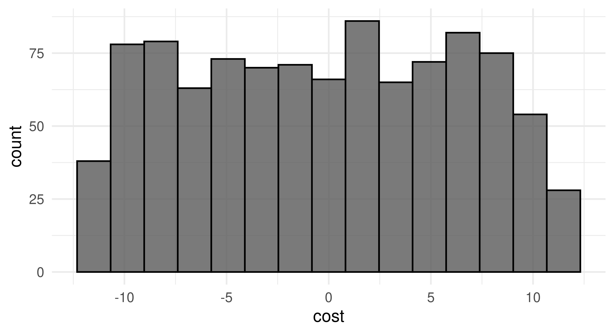
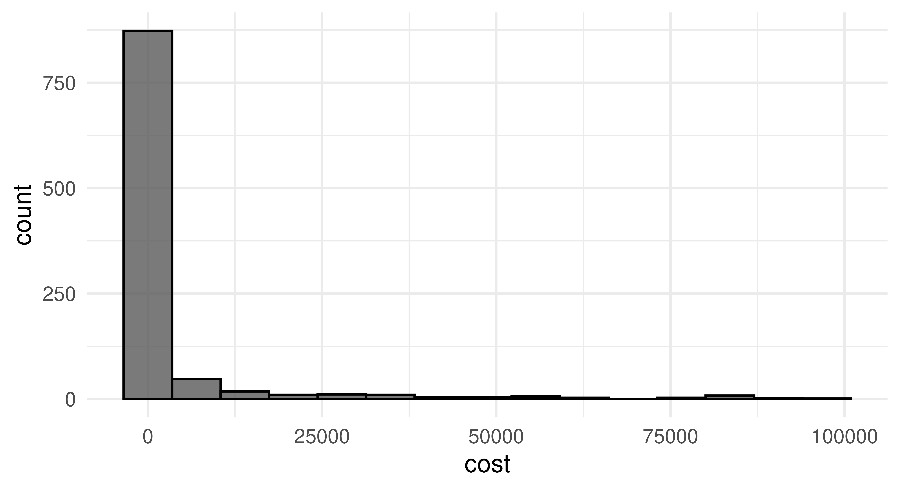

![Diagram showing 13 boxes representing model-agnostic HPO. On the top are two boxes, one that says "Search Space" (dark blue) and the other "Tuner" (green), these are connected by a line to "Propose Hyperparameter Configurations" (purple). That box has an arrow pointing towards another box "Evaluate by Resampling" (purple), which has a line to a blue-green box "Objective", which has four blue boxes connected toit "Task", "Learner", "Resampling", and "Measure". "Evaluate by Resampling" also has one line to the right connected to "Archive" (blue-green) which has an arrow to "Terminator" (blue) and "Update Tuner" (purple). "Terminator" has an arrow to "Optimal Hyperparameter Configuration" (purple) and "Update Tuner" has an arrow back to "Propose Hyperparameter Configurations".](Figures/mlr3book_figures-9.svg)
4 Hyperparameter Optimization
Marc Becker
Ludwig-Maximilians-Universität München, and Munich Center for Machine Learning (MCML)
Lennart Schneider
Ludwig-Maximilians-Universität München, and Munich Center for Machine Learning (MCML)
Sebastian Fischer
Ludwig-Maximilians-Universität München, and Munich Center for Machine Learning (MCML)
Machine learning algorithms usually include parameters and hyperparameters. Parameters are the model coefficients or weights or other information that are determined by the learning algorithm based on the training data. In contrast, hyperparameters, are configured by the user and determine how the model will fit its parameters, i.e., how the model is built. Examples include setting the number of trees in a random forest, penalty settings in support vector machines, or the learning rate in a neural network.
Hyperparameters
The goal of hyperparameter optimization (HPO) or model tuning is to find the optimal configuration of hyperparameters of a machine learning algorithm for a given task. There is no closed-form mathematical representation (nor analytic gradient information) for model-agnostic HPO. Instead, we follow a black box optimization approach: a machine learning algorithm is configured with values chosen for one or more hyperparameters, this algorithm is then evaluated (using a resampling method) and its performance is measured. This process is repeated with multiple configurations and finally, the configuration with the best performance is selected (Figure 4.1). HPO closely relates to model evaluation (Chapter 3) as the objective is to find a hyperparameter configuration that optimizes the generalization performance. Broadly speaking, we could think of finding the optimal model configuration in the same way as selecting a model from a benchmark experiment, where in this case each model in the experiment is the same algorithm but with different hyperparameter configurations. For example, we could benchmark three support vector machines (SVMs) with three different cost values. However, human trial-and-error is time-consuming, subjective and often biased, error-prone, and computationally inefficient. Instead, many sophisticated hyperparameter optimization methods (or ‘tuners’, see Section 4.1.4) have been developed over the past few decades for robust and efficient HPO. Besides simple approaches such as a random search or grid search, most hyperparameter optimization methods employ iterative techniques that propose different configurations over time, often exhibiting adaptive behavior guided towards potentially optimal hyperparameter configurations. These methods continually propose new configurations until a termination criterion is met, at which point the best configuration so far is returned (Figure 4.1). For more general details on HPO and more theoretical background, we recommend Bischl et al. (2023) and Feurer and Hutter (2019).
Hyperparameter Optimization
4.1 Model Tuning
mlr3tuning is the hyperparameter optimization package of the mlr3 ecosystem. At the heart of the package are the R6 classes
-
TuningInstanceSingleCrit, a tuning ‘instance’ that describes the optimization problem and store the results; and -
Tunerwhich is used to configure and run optimization algorithms.
In this section, we will cover these classes as well as other supporting functions and classes. Throughout this section, we will look at optimizing an SVM classifier from e1071 on tsk("sonar") as a running example.
4.1.1 Learner and Search Space
The tuning process begins by deciding which hyperparameters to tune and what range to tune them over. The first place to start is therefore picking a learner and looking at the possible hyperparameters to tune with $param_set:
as.data.table(lrn("classif.svm")$param_set)[,
.(id, class, lower, upper, nlevels)] id class lower upper nlevels
1: cachesize ParamDbl -Inf Inf Inf
2: class.weights ParamUty NA NA Inf
3: coef0 ParamDbl -Inf Inf Inf
4: cost ParamDbl 0 Inf Inf
5: cross ParamInt 0 Inf Inf
---
12: nu ParamDbl -Inf Inf Inf
13: scale ParamUty NA NA Inf
14: shrinking ParamLgl NA NA 2
15: tolerance ParamDbl 0 Inf Inf
16: type ParamFct NA NA 2Given infinite resources, we could tune all hyperparameters jointly, but in reality that is not possible (or maybe necessary), so usually only a subset of hyperparameters can be tuned. This subset of possible hyperparameter values to tune over is referred to as the search space or tuning space. In this example we will tune the numeric regularization and kernel width hyperparameters, cost and gamma; see the help page for svm() for details. In practice, search spaces are usually more complex and can require expert knowledge to define them. Section 4.4 provides more detailed insight into the creation of tuning spaces, including using mlr3tuningspaces to load predefined search spaces.
Search Space
Untunable Hyperparameters
In rare cases, parameter sets may include hyperparameters that should not be tuned. These will usually be ‘technical’ (or ‘control’) parameters that provide information about how the model is being fit but do not control the training process itself, for example, the verbose hyperparameter in lrn("classif.ranger") controls how much information is displayed to the user during training.
For numeric hyperparameters (we will explore others later) one must specify the bounds to tune over. We do this by constructing a learner and using to_tune() to set the lower and upper limits for the parameters we want to tune. This function allows us to mark the hyperparameter as requiring tuning in the specified range.
learner = lrn("classif.svm",
type = "C-classification",
kernel = "radial",
cost = to_tune(1e-1, 1e5),
gamma = to_tune(1e-1, 1)
)
learner<LearnerClassifSVM:classif.svm>
* Model: -
* Parameters: type=C-classification, kernel=radial,
cost=<RangeTuneToken>, gamma=<RangeTuneToken>
* Packages: mlr3, mlr3learners, e1071
* Predict Types: [response], prob
* Feature Types: logical, integer, numeric
* Properties: multiclass, twoclassHere we have constructed a classification SVM, lrn("classif.svm"), selected the type of model as "C-classification", set the kernel to "radial", and specified that we plan to tune the cost and gamma parameters over the range \([0.1, 10^5]\) and \([0.1, 1]\) respectively (though these are usually tuned on a log scale, see Section 4.1.5). Note that calling $train() on a learner with a tune token (e.g., cost=<RangeTuneToken>) will throw an error.
Now we have decided which hyperparameters to tune, we specify when to stop the tuning process.
4.1.2 Terminator
mlr3tuning includes many methods to specify when to terminate an algorithm (Table 4.1), which are implemented in Terminator classes. Terminators are stored in the mlr_terminators dictionary and are constructed with the sugar function trm().
Terminatortrm()mlr3tuning at the time of publication, their function call and default parameters. A complete and up-to-date list can be found at https://mlr-org.com/terminators.html.
| Terminator | Function call and default parameters |
|---|---|
| Clock Time | trm("clock_time") |
| Combo | trm("combo", any = TRUE) |
| None | trm("none") |
| Number of Evaluations | trm("evals", n_evals = 100, k = 0) |
| Performance Level | trm("perf_reached", level = 0.1) |
| Run Time | trm("run_time", secs = 30) |
| Stagnation | trm("stagnation", iters = 10, threshold = 0) |
The most commonly used terminators are those that stop the tuning after a certain time (trm("run_time")) or a given number of evaluations (trm("evals")). Choosing a runtime is often based on practical considerations and intuition. Using a time limit can be important on compute clusters where a maximum runtime for a compute job may need to be specified. trm("perf_reached") stops the tuning when a specified performance level is reached, which can be helpful if a certain performance is seen as sufficient for the practical use of the model, however, if this is set too optimistically the tuning may never terminate. trm("stagnation") stops when no progress greater than the threshold has been made for a set number of iterations. The threshold can be difficult to select as the optimization could stop too soon for complex search spaces despite room for (possibly significant) improvement. trm("none") is used for tuners that control termination themselves and so this terminator does nothing. Finally, any of these terminators can be freely combined by using trm("combo"), which can be used to specify if HPO finishes when any (any = TRUE) terminator is triggered or when all (any = FALSE) are triggered.
4.1.3 Tuning Instance with ti
The tuning instance collects the tuner-agnostic information required to optimize a model, i.e., all information about the tuning process, except for the tuning algorithm itself. This includes the task to tune over, the learner to tune, the resampling method and measure used to analytically compare hyperparameter optimization configurations, and the terminator to determine when the measure has been optimized ‘enough’. This implicitly defines a “black box” objective function, mapping hyperparameter configurations to (stochastic) performance values, to be optimized. This concept will be revisited in Chapter 5.
A tuning instance can be constructed explicitly with the ti() function, or we can tune a learner with the tune() function, which implicitly creates a tuning instance, as shown in Section 4.2. We cover the ti() approach first as this allows finer control of tuning and a more nuanced discussion about the design and use of mlr3tuning.
Continuing our example, we will construct a single-objective tuning problem (i.e., tuning over one measure) by using the ti() function to create a TuningInstanceSingleCrit, we will return to multi-objective tuning in Section 5.2.
For this example, we will use three-fold CV and optimize the classification error measure. Note that in the next section, we will continue our example with a grid search tuner, so we select trm("none") below as we will want to iterate over the full grid without stopping too soon.
tsk_sonar = tsk("sonar")
learner = lrn("classif.svm",
cost = to_tune(1e-1, 1e5),
gamma = to_tune(1e-1, 1),
kernel = "radial",
type = "C-classification"
)
instance = ti(
task = tsk_sonar,
learner = learner,
resampling = rsmp("cv", folds = 3),
measures = msr("classif.ce"),
terminator = trm("none")
)
instance<TuningInstanceSingleCrit>
* State: Not optimized
* Objective: <ObjectiveTuning:classif.svm_on_sonar>
* Search Space:
id class lower upper nlevels
1: cost ParamDbl 0.1 1e+05 Inf
2: gamma ParamDbl 0.1 1e+00 Inf
* Terminator: <TerminatorNone>4.1.4 Tuner
With all the pieces of our tuning problem assembled, we can now decide how to tune our model. There are multiple Tuner classes in mlr3tuning, which implement different HPO (or more generally speaking black box optimization) algorithms (Table 4.2).
Tunermlr3tuning, their function call and the package in which the algorithm is implemented. A complete and up-to-date list can be found at https://mlr-org.com/tuners.html.
| Tuner | Function call | Package |
|---|---|---|
| Random Search | tnr("random_search") |
mlr3tuning |
| Grid Search | tnr("grid_search") |
mlr3tuning |
| Bayesian Optimization | tnr("mbo") |
mlr3mbo |
| CMA-ES | tnr("cmaes") |
adagio |
| Iterated Racing | tnr("irace") |
irace |
| Hyperband | tnr("hyperband") |
mlr3hyperband |
| Generalized Simulated Annealing | tnr("gensa") |
GenSA |
| Nonlinear Optimization | tnr("nloptr") |
nloptr |
Search strategies
Grid search and random search (Bergstra and Bengio 2012) are the most basic algorithms and are often selected first in initial experiments. The idea of grid search is to exhaustively evaluate every possible combination of given hyperparameter values. Categorical hyperparameters are usually evaluated over all possible values they can take. Numeric and integer hyperparameter values are then spaced equidistantly in their box constraints (upper and lower bounds) according to a given resolution, which is the number of distinct values to try per hyperparameter. Random search involves randomly selecting values for each hyperparameter independently from a pre-specified distribution, usually uniform. Both methods are non-adaptive, which means each proposed configuration ignores the performance of previous configurations. Due to their simplicity, both grid search and random search can handle mixed search spaces (i.e., hyperparameters can be numeric, integer, or categorical) as well as hierarchical search spaces (Section 4.4).
Adaptive algorithms
Adaptive algorithms learn from previously evaluated configurations to find good configurations quickly, examples in mlr3 include Bayesian optimization (also called model-based optimization), Covariance Matrix Adaptation Evolution Strategy (CMA-ES), Iterated Racing, and Hyperband.
Bayesian optimization (e.g., Snoek, Larochelle, and Adams 2012) describes a family of iterative optimization algorithms that use a surrogate model to approximate the unknown function that is to be optimized – in HPO this would be the mapping from a hyperparameter configuration to the estimated generalization performance. If a suitable surrogate model is chosen, e.g. a random forest, Bayesian optimization can be quite flexible and even handle mixed and hierarchical search spaces. Bayesian optimization is discussed in full detail in Section 5.4.
CMA-ES (Hansen and Auger 2011) is an evolutionary strategy that maintains a probability distribution over candidate points, with the distribution represented by a mean vector and covariance matrix. A new set of candidate points is generated by sampling from this distribution, with the probability of each candidate being proportional to its performance. The covariance matrix is adapted over time to reflect the performance landscape. Further evolutionary strategies are available in mlr3 via the miesmuschel package, however, these will not be covered in this book.
Racing algorithms work by iteratively discarding configurations that show poor performance, as determined by statistical tests. Iterated Racing (López-Ibáñez et al. 2016) starts by ‘racing’ down an initial population of randomly sampled configurations from a parameterized density and then uses the surviving configurations of the race to stochastically update the density of the subsequent race to focus on promising regions of the search space, and so on.
Multi-fidelity HPO is an adaptive method that leverages the predictive power of computationally cheap lower fidelity evaluations (i.e., poorer quality predictions such as those arising from neural networks with a small number of epochs) to improve the overall optimization efficiency. This concept is used in Hyperband (Li et al. 2018), a popular multi-fidelity hyperparameter optimization algorithm that dynamically allocates increasingly more resources to promising configurations and terminates low-performing ones. Hyperband is discussed in full detail in Section 5.3.
Other implemented algorithms for numeric search spaces are Generalized Simulated Annealing (Xiang et al. 2013; Tsallis and Stariolo 1996) and various nonlinear optimization algorithms.
Choosing strategies
As a rule of thumb, if the search space is small or does not have a complex structure, grid search may be able to exhaustively evaluate the entire search space in a reasonable time. However, grid search is generally not recommended due to the curse of dimensionality – the grid size ‘blows up’ very quickly as the number of parameters to tune increases – and insufficient coverage of numeric search spaces. By construction, grid search cannot evaluate a large number of unique values per hyperparameter, which is suboptimal when some hyperparameters have minimal impact on performance while others do. In such scenarios, random search is often a better choice as it considers more unique values per hyperparameter compared to grid search.
For higher-dimensional search spaces or search spaces with more complex structure, more guided optimization algorithms such as evolutionary strategies or Bayesian optimization tend to perform better and are more likely to result in peak performance. When choosing between evolutionary strategies and Bayesian optimization, the cost of function evaluation is highly relevant. If hyperparameter configurations can be evaluated quickly, evolutionary strategies often work well. On the other hand, if model evaluations are time-consuming and the optimization budget is limited, Bayesian optimization is usually preferred, as it is quite sample efficient compared to other algorithms, i.e., less function evaluations are needed to find good configurations. Hence, Bayesian optimization is usually recommended for HPO. While the optimization overhead of Bayesian optimization is comparably large (e.g., in each iteration, training of the surrogate model and optimizing the acquisition function), this has less of an impact in the context of relatively costly function evaluations such as resampling of ML models.
Finally, in cases where the hyperparameter optimization problem involves a meaningful fidelity parameter (e.g., number of epochs, number of trees, number of boosting rounds) and where the optimization budget needs to be spent efficiently, multi-fidelity hyperparameter optimization algorithms like Hyperband may be worth considering. For further details on different tuners and practical recommendations, we refer to Bischl et al. (2023).
$param_classes and $properties
The $param_classes and $properties fields of a Tuner respectively provide information about which classes of hyperparameters can be handled and what properties the tuner can handle (e.g., hyperparameter dependencies, which are shown in Section 4.4, or multicriteria optimization, which is presented in Section 5.2):
tnr("random_search")$param_classes[1] "ParamLgl" "ParamInt" "ParamDbl" "ParamFct"tnr("random_search")$properties[1] "dependencies" "single-crit" "multi-crit" For our SVM example, we will use a grid search with a resolution of five for runtime reasons here (in practice a larger resolution would be preferred). The resolution is the number of distinct values to try per hyperparameter, which means in our example the tuner will construct a 5x5 grid of 25 configurations of equally spaced points between the specified upper and lower bounds. All configurations will be tried by the tuner (in random order) until either all configurations are evaluated or the terminator (Section 4.1.2) signals that the budget is exhausted. For grid and random search tuners, the batch_size parameter controls how many configurations are evaluated at the same time when parallelization is enabled (see Section 10.1.3), and also determines how many configurations should be applied before the terminator should check if the termination criterion has been reached.
tuner = tnr("grid_search", resolution = 5, batch_size = 10)
tuner<TunerGridSearch>: Grid Search
* Parameters: resolution=5, batch_size=10
* Parameter classes: ParamLgl, ParamInt, ParamDbl, ParamFct
* Properties: dependencies, single-crit, multi-crit
* Packages: mlr3tuningThe resolution and batch_size parameters are termed control parameters of the tuner, and other tuners will have other control parameters that can be set, as with learners these are accessible with $param_set.
Control Parameters
tuner$param_set<ParamSet>
id class lower upper nlevels default value
1: batch_size ParamInt 1 Inf Inf <NoDefault[3]> 10
2: resolution ParamInt 1 Inf Inf <NoDefault[3]> 5
3: param_resolutions ParamUty NA NA Inf <NoDefault[3]> While changing the control parameters of the tuner can improve optimal performance, we have to take care that is likely the default settings will fit most needs. While it is not possible to cover all application cases, mlr3tuning’s defaults were chosen to work well in most cases. However, some control parameters like batch_size often interact with the parallelization setup (further described in Section 10.1.3) and may need to be adjusted accordingly.
Triggering the tuning process
Now that we have introduced all our components, we can start the tuning process. To do this we simply pass the constructed TuningInstanceSingleCrit to the $optimize() method of the initialized Tuner, which triggers the hyperparameter optimization loop (Figure 4.1).
tuner$optimize(instance) cost gamma learner_param_vals x_domain classif.ce
1: 25000 0.1 <list[4]> <list[2]> 0.2449The optimizer returns the best hyperparameter configuration and the corresponding performance, this information is also stored in instance$result. The first columns (here cost and gamma) will be named after the tuned hyperparameters and show the optimal values from the searched tuning spaces. The $learner_param_vals field of the $result lists the optimal hyperparameters from tuning, as well as the values of any other hyperparameters that were set, this is useful for onward model use (Section 4.1.6).
instance$result$learner_param_vals[[1]]
[[1]]$kernel
[1] "radial"
[[1]]$type
[1] "C-classification"
[[1]]$cost
[1] 25000
[[1]]$gamma
[1] 0.1The $x_domain field is most useful in the context of hyperparameter transformations, which we will briefly turn to next.
Overconfident Performance Estimates
A common mistake when tuning is to report the performance estimated on the resampling sets on which the tuning was performed (instance$result$classif.ce) as an unbiased estimate of the model’s performance and to ignore its optimistic bias. The correct method is to test the model on more unseen data, which can be efficiently performed with nested resampling, we will discuss this in Section 4.3.2.
4.1.5 Logarithmic Transformations
For many non-negative hyperparameters that have a large upper bound, tuning on a logarithmic scale can be more efficient than tuning on a linear scale. By example, consider sampling uniformly in the interval \([\log(1e-5), \log(1e5)]\) and then exponentiating the outcome, the histograms in Figure 4.2 show how we are initially sampling within a narrow range (\([-11.5, 11.5]\)) but then exponentiating results in the majority of points being relatively small but a few being very large.


To add this transformation to a hyperparameter we simply pass logscale = TRUE to to_tune().
learner = lrn("classif.svm",
cost = to_tune(1e-5, 1e5, logscale = TRUE),
gamma = to_tune(1e-5, 1e5, logscale = TRUE),
kernel = "radial",
type = "C-classification"
)
instance = ti(
task = tsk_sonar,
learner = learner,
resampling = rsmp("cv", folds = 3),
measures = msr("classif.ce"),
terminator = trm("none")
)
tuner$optimize(instance) cost gamma learner_param_vals x_domain classif.ce
1: 5.756 -5.756 <list[4]> <list[2]> 0.1394We can see from this example that using the log transformation improved the hyperparameter search, as classif.ce is smaller.
Note that the fields cost and gamma show the optimal values before transformation, whereas x_domain and learner_param_vals contain optimal values after transformation, it is these latter fields you would take forward for future model use.
instance$result$x_domain[[1]]
[[1]]$cost
[1] 316.2
[[1]]$gamma
[1] 0.003162In Section 4.4 we will look at how to implement more complex, custom transformations for any hyperparameter or combination of hyperparameters. Now we will look at how to put everything into practice so we can make use of the tuned model (and the transformed hyperparameters).
4.1.6 Analyzing and Using the Result
Independently of whether you use ti() or tune(), or if you include transformations or not, the created objects and the output are structurally the same and the instance’s archive lists all evaluated hyperparameter configurations:
as.data.table(instance$archive)[1:3, .(cost, gamma, classif.ce)] cost gamma classif.ce
1: -11.513 -5.756 0.4665
2: -5.756 -11.513 0.4665
3: -5.756 11.513 0.4665Each row of the archive is a different evaluated configuration. The columns show the tested configurations (before transformation) and the chosen performance measure. We can also manually inspect the archive to determine other important features such as time of evaluation, model runtime, and any errors or warnings that occurred during tuning.
as.data.table(instance$archive)[1:3,
.(timestamp, runtime_learners, errors, warnings)] timestamp runtime_learners errors warnings
1: 2024-02-26 11:03:30 0.047 0 0
2: 2024-02-26 11:03:30 0.058 0 0
3: 2024-02-26 11:03:30 0.052 0 0Another powerful feature of the instance is that we can score the internal ResampleResults on a different performance measure, for example looking at false negative rate and false positive rate as well as classification error:
as.data.table(instance$archive,
measures = msrs(c("classif.fpr", "classif.fnr")))[1:5 ,
.(cost, gamma, classif.ce, classif.fpr, classif.fnr)] cost gamma classif.ce classif.fpr classif.fnr
1: -11.513 -5.756 0.4665 1.0000 0.00000
2: -5.756 -11.513 0.4665 1.0000 0.00000
3: -5.756 11.513 0.4665 1.0000 0.00000
4: 0.000 -5.756 0.2308 0.3186 0.14997
5: 5.756 -5.756 0.1394 0.2089 0.08056You can access all the resamplings combined in a BenchmarkResult object with instance$archive$benchmark_result.
Finally, to visualize the results, you can use autoplot.TuningInstanceSingleCrit (Figure 4.3). In this example we can observe one of the flaws (by design) in grid search, despite testing 25 configurations, we only saw five unique values for each hyperparameter.
autoplot(instance, type = "surface")
cost and gamma. Bright yellow regions represent the model performing worse and dark blue performing better. We can see that high cost values and low gamma values achieve the best performance. Note that we should not directly infer the performance of new unseen values from the heatmap since it is only an interpolation based on a surrogate model (regr.ranger). However, we can see the general interaction between the hyperparameters.
Training an optimized model
Once we found good hyperparameters for our learner through tuning, we can use them to train a final model on the whole data. To do this we simply construct a new learner with the same underlying algorithm and set the learner hyperparameters to the optimal configuration:
lrn_svm_tuned = lrn("classif.svm")
lrn_svm_tuned$param_set$values = instance$result_learner_param_valsNow we can train the learner on the full dataset and we are ready to make predictions.
lrn_svm_tuned$train(tsk_sonar)$model
Call:
svm.default(x = data, y = task$truth(), type = "C-classification",
kernel = "radial", gamma = 0.00316227766016838, cost = 316.227766016838,
probability = (self$predict_type == "prob"))
Parameters:
SVM-Type: C-classification
SVM-Kernel: radial
cost: 316.2
Number of Support Vectors: 93
4.2 Convenient Tuning with tune and auto_tuner
In the previous section, we looked at constructing and manually putting together the components of HPO by creating a tuning instance using ti(), passing this to the tuner, and then calling $optimize() to start the tuning process. mlr3tuning includes two helper methods to simplify this process further.
The first helper function is tune(), which creates the tuning instance and calls $optimize() for you. You may prefer the manual method with ti() if you want to view and make changes to the instance before tuning.
tnr_grid_search = tnr("grid_search", resolution = 5, batch_size = 5)
lrn_svm = lrn("classif.svm",
cost = to_tune(1e-5, 1e5, logscale = TRUE),
gamma = to_tune(1e-5, 1e5, logscale = TRUE),
kernel = "radial",
type = "C-classification"
)
rsmp_cv3 = rsmp("cv", folds = 3)
msr_ce = msr("classif.ce")
instance = tune(
tuner = tnr_grid_search,
task = tsk_sonar,
learner = lrn_svm,
resampling = rsmp_cv3,
measures = msr_ce
)
instance$result cost gamma learner_param_vals x_domain classif.ce
1: 5.756 -5.756 <list[4]> <list[2]> 0.1444The other helper function is auto_tuner, which creates an object of class AutoTuner (Figure 4.4). The AutoTuner inherits from the Learner class and wraps all the information needed for tuning, which means you can treat a learner waiting to be optimized just like any other learner. Under the hood, the AutoTuner essentially runs tune() on the data that is passed to the model when $train() is called and then sets the learner parameters to the optimal configuration.
at = auto_tuner(
tuner = tnr_grid_search,
learner = lrn_svm,
resampling = rsmp_cv3,
measure = msr_ce
)
at<AutoTuner:classif.svm.tuned>
* Model: list
* Search Space:
<ParamSet>
id class lower upper nlevels default value
1: cost ParamDbl -11.51 11.51 Inf <NoDefault[3]>
2: gamma ParamDbl -11.51 11.51 Inf <NoDefault[3]>
Trafo is set.
* Packages: mlr3, mlr3tuning, mlr3learners, e1071
* Predict Type: response
* Feature Types: logical, integer, numeric
* Properties: multiclass, twoclass
And we can now call $train(), which will first tune the hyperparameters in the search space listed above before fitting the optimal model.
split = partition(tsk_sonar)
at$train(tsk_sonar, row_ids = split$train)
at$predict(tsk_sonar, row_ids = split$test)$score()classif.ce
0.2029 The AutoTuner contains a tuning instance that can be analyzed like any other instance.
at$tuning_instance$result cost gamma learner_param_vals x_domain classif.ce
1: 5.756 -5.756 <list[4]> <list[2]> 0.1727We could also pass the AutoTuner to resample() and benchmark(), which would result in a nested resampling, discussed next.
4.3 Nested Resampling
HPO requires additional resampling to reduce bias when estimating the performance of a model. If the same data is used for determining the optimal configuration and the evaluation of the resulting model itself, the actual performance estimate might be biased (Simon 2007). This is analogous to optimism of the training error described in James et al. (2014), which occurs when training error is taken as an estimate of out-of-sample performance.
Nested resampling separates model optimization from the process of estimating the performance of the tuned model by adding an additional resampling, i.e., while model performance is estimated using a resampling method in the ‘usual way’, tuning is then performed by resampling the resampled data (Figure 4.5). For more details and a formal introduction to nested resampling the reader is referred to Bischl et al. (2023) and Simon (2007).

Figure 4.5 represents the following example of nested resampling:
- Outer resampling start – Instantiate three-fold CV to create different testing and training datasets.
- Inner resampling – Within the outer training data instantiate four-fold CV to create different inner testing and training datasets.
- HPO – Tune the hyperparameters on the outer training set (large, light blue blocks) using the inner data splits.
- Training – Fit the learner on the outer training dataset using the optimal hyperparameter configuration obtained from the inner resampling (small blocks).
- Evaluation – Evaluate the performance of the learner on the outer testing data (large, dark blue block).
- Outer resampling repeats – Repeat (2)-(5) for each of the three outer folds.
- Aggregation – Take the sample mean of the three performance values for an unbiased performance estimate.
The inner resampling produces generalization performance estimates for each configuration and selects the optimal configuration to be evaluated on the outer resampling. The outer resampling then produces generalization estimates for these optimal configurations. The result from the outer resampling can be used for comparison to other models trained and tested on the same outer folds.
Nested Resampling and Parallelization
Nested resampling is computationally expensive, three outer folds and four inner folds with a grid search of resolution five used to tune two parameters, results in \(3*4*5^2 = 300\) iterations of model training/testing. If you have the resources we recommend utilizing parallelization when tuning (Section 10.1).
A common mistake is to think of nested resampling as a method to select optimal model configurations. Nested resampling is a method to compare models and to estimate the generalization performance of a tuned model, however, this is the performance based on multiple different configurations (one from each outer fold) and not performance based on a single configuration (Section 4.3.2). If you are interested in identifying optimal configurations, then use tune()/ti() or auto_tuner() with $train() on the complete dataset.
4.3.1 Nested Resampling with an AutoTuner
While the theory of nested resampling may seem complicated, it is all automated in mlr3tuning by simply passing an AutoTuner to resample() or benchmark(). Continuing with our previous example, we will use the auto-tuner to resample a support vector classifier with three-fold CV in the outer resampling and four-fold CV in the inner resampling.
at = auto_tuner(
tuner = tnr_grid_search,
learner = lrn_svm,
resampling = rsmp("cv", folds = 4),
measure = msr_ce,
)
rr = resample(tsk_sonar, at, rsmp_cv3, store_models = TRUE)
rr<ResampleResult> with 3 resampling iterations
task_id learner_id resampling_id iteration warnings errors
sonar classif.svm.tuned cv 1 0 0
sonar classif.svm.tuned cv 2 0 0
sonar classif.svm.tuned cv 3 0 0Note that we set store_models = TRUE so that the AutoTuner models (fitted on the outer training data) are stored, which also enables investigation of the inner tuning instances. While we used k-fold CV for both the inner and outer resampling strategy, you could use different resampling strategies (Section 3.2) and also different parallelization methods (Section 10.1.4).
The estimated performance of a tuned model is reported as the aggregated performance of all outer resampling iterations, which is a less biased estimate of future model performance.
rr$aggregate()classif.ce
0.1589 In addition to the methods described in Section 3.2, extract_inner_tuning_results() and extract_inner_tuning_archives() return the optimal configurations (across all outer folds) and full tuning archives, respectively.
extract_inner_tuning_results(rr)[,
.(iteration, cost, gamma, classif.ce)] iteration cost gamma classif.ce
1: 1 11.51 -5.756 0.2174
2: 2 11.51 -5.756 0.2086
3: 3 11.51 -5.756 0.1796extract_inner_tuning_archives(rr)[1:3,
.(iteration, cost, gamma, classif.ce)] iteration cost gamma classif.ce
1: 1 -11.51 -11.513 0.5286
2: 1 -11.51 11.513 0.5286
3: 1 0.00 -5.756 0.29814.3.2 The Right (and Wrong) Way to Estimate Performance
This section covers advanced ML or technical details.
In this short section we will empirically demonstrate that directly reporting tuning performance without nested resampling results in optimistically biased performance estimates. In this experiment we tune several parameters from lrn("classif.xgboost"). To best estimate the generalization performance we make use of the "moons" TaskGenerator. The TaskGenerator class is used when you want to simulate data for use in experiments, these are very useful in cases such as this experiment when you need access to an infinite number of data points to estimate quantities such as the generalization error.
TaskGeneratorWe begin by loading our learner, task generator, and generating 100 training data points and 1,000,000 testing data points.
lrn_xgboost = lrn("classif.xgboost",
eta = to_tune(1e-4, 1, logscale = TRUE),
max_depth = to_tune(1, 20),
colsample_bytree = to_tune(1e-1, 1),
colsample_bylevel = to_tune(1e-1, 1),
lambda = to_tune(1e-3, 1e3, logscale = TRUE),
alpha = to_tune(1e-3, 1e3, logscale = TRUE),
subsample = to_tune(1e-1, 1)
)
tsk_moons = tgen("moons")
tsk_moons_train = tsk_moons$generate(100)
tsk_moons_test = tsk_moons$generate(1000000)Now we will tune the learner with respect to the classification error, using holdout resampling and random search with 700 evaluations. We then report the tuning performance without nested resampling.
tnr_random = tnr("random_search")
rsmp_holdout = rsmp("holdout")
trm_evals700 = trm("evals", n_evals = 700)
instance = tune(
tuner = tnr_random,
task = tsk_moons_train,
learner = lrn_xgboost,
resampling = rsmp_holdout,
measures = msr_ce,
terminator = trm_evals700
)
insample = instance$result_yNext, we estimate generalization error by nested resampling (below we use an outer five-fold CV), using an AutoTuner:
# same setup as above
at = auto_tuner(
tuner = tnr_random,
learner = lrn_xgboost,
resampling = rsmp_holdout,
measure = msr_ce,
terminator = trm_evals700
)
rsmp_cv5 = rsmp("cv", folds = 5)
outsample = resample(tsk_moons_train, at, rsmp_cv5)$aggregate()And finally, we estimate the generalization error by training the tuned learner (i.e., using the values from the instance above) on the full training data again and predicting on the test data.
lrn_xgboost_tuned = lrn("classif.xgboost")
lrn_xgboost_tuned$param_set$set_values(
.values = instance$result_learner_param_vals)
generalization = lrn_xgboost_tuned$train(tsk_moons_train)$
predict(tsk_moons_test)$score()Now we can compare these three values:
round(c(true_generalization = as.numeric(generalization),
without_nested_resampling = as.numeric(insample),
with_nested_resampling = as.numeric(outsample)), 2) true_generalization without_nested_resampling
0.31 0.06
with_nested_resampling
0.20 We find that the performance estimate from unnested tuning optimistically overestimates the true performance (which could indicate ‘meta-overfitting’ to the specific inner holdout-splits), while the outer estimate from nested resampling works much better.
4.4 More Advanced Search Spaces
Up until now, we have only considered tuning simple search spaces limited to a few numeric hyperparameters. In this section, we will first look at how to tune different scalar parameter classes with to_tune(), and then how to define your own search space with ParamSet to create more advanced search spaces that may include tuning over vectors, transformations, and handling parameter dependencies. Finally, we will consider how to access a database of standardized search spaces from the literature.
4.4.1 Scalar Parameter Tuning
The to_tune() function can be used to tune parameters of any class, whether they are scalar or vectors. To best understand this function, we will consider what is happening behind the scenes. When to_tune() is used in a learner, implicitly a ParamSet is created just for the tuning search space:
learner = lrn("classif.svm",
cost = to_tune(1e-1, 1e5),
gamma = to_tune(1e-1, 1),
kernel = "radial",
type = "C-classification"
)
learner$param_set$search_space()<ParamSet>
id class lower upper nlevels default value
1: cost ParamDbl 0.1 1e+05 Inf <NoDefault[3]>
2: gamma ParamDbl 0.1 1e+00 Inf <NoDefault[3]> Recall from Section 2.2.3, that the class field corresponds to the hyperparameter class as defined in paradox. In this example, we can see that gamma hyperparameter has class ParamDbl, with lower = 0.1 and upper = 1, which was automatically created by to_tune() as we passed two numeric values to this function. If we wanted to tune over a non-numeric hyperparameter, we can still use to_tune(), which will infer the correct class to construct in the resulting parameter set. For example, say we wanted to tune the numeric cost, factor kernel, and logical scale hyperparameter in our SVM:
learner = lrn("classif.svm",
cost = to_tune(1e-1, 1e5),
kernel = to_tune(c("radial", "linear")),
shrinking = to_tune(),
type = "C-classification"
)
learner$param_set$search_space()<ParamSet>
id class lower upper nlevels default value
1: cost ParamDbl 0.1 1e+05 Inf <NoDefault[3]>
2: kernel ParamFct NA NA 2 <NoDefault[3]>
3: shrinking ParamLgl NA NA 2 TRUE Here the kernel hyperparameter is a factor, so we simply pass in a vector corresponding to the levels we want to tune over. The shrinking hyperparameter is a logical, there are only two possible values this could take so we do not need to pass anything to to_tune(), it will automatically recognize this is a logical from learner$param_set and passes this detail to learner$param_set$search_space(). Similarly, for factor parameters, we could also use to_tune() without any arguments if we want to tune over all possible values. Finally, we can use to_tune() to treat numeric parameters as factors if we want to discretize them over a small subset of possible values, for example, if we wanted to find the optimal number of trees in a random forest we might only consider three scenarios: 100, 200, or 400 trees:
lrn("classif.ranger", num.trees = to_tune(c(100, 200, 400)))Before we look at tuning over vectors, we must first learn how to create parameter sets from scratch.
Ordered Hyperparameters
Treating an integer as a factor for tuning results in “unordered” hyperparameters. Therefore algorithms that make use of ordering information will perform worse when ordering is ignored. For these algorithms, it would make more sense to define a ParamDbl or ParamInt (Section 4.4.2) with a custom transformation (Section 4.4.3).
4.4.2 Defining Search Spaces with ps
As we have seen, to_tune() is a helper function that creates a parameter set that will go on to be used by tune(), ti(), or auto_tuner() during the tuning process. However, there will be use cases where you will need to create a parameter set manually using ps(). This function takes named arguments of class Param, which can be created using the sugar functions in Table 4.3.
As a simple example, let us look at how to create a search space to tune cost and gamma again:
search_space = ps(
cost = p_dbl(lower = 1e-1, upper = 1e5),
kernel = p_fct(c("radial", "linear")),
shrinking = p_lgl()
)This search space would then be passed to the search_space argument in auto_tuner():
ti(tsk_sonar, lrn("classif.svm", type = "C-classification"), rsmp_cv3,
msr_ce, trm("none"), search_space = search_space)<TuningInstanceSingleCrit>
* State: Not optimized
* Objective: <ObjectiveTuning:classif.svm_on_sonar>
* Search Space:
id class lower upper nlevels
1: cost ParamDbl 0.1 1e+05 Inf
2: kernel ParamFct NA NA 2
3: shrinking ParamLgl NA NA 2
* Terminator: <TerminatorNone>
Bounded Search Spaces
When manually creating search spaces, make sure all numeric hyperparameters in your search space are bounded, e.g., if you are trying to tune a hyperparameter that could take any value in \((-\infty, \infty)\) then the tuning process will throw an error for nearly all tuners if you do not pass lower and upper limits to p_dbl() or p_int(). You can use $is_bounded on the constructed ParamSet if you are unsure:
ps(cost = p_dbl(lower = 0.1, upper = 1))$is_bounded[1] TRUEps(cost = p_dbl(lower = 0.1, upper = Inf))$is_bounded[1] FALSE4.4.3 Transformations and Tuning Over Vectors
This section covers advanced ML or technical details.
In Section 4.1.5 we saw how to quickly apply log transformations with to_tune(). As you now know, to_tune() is just a wrapper that creates ParamSet objects, so let us look at what is taking place when we set logscale = TRUE:
lrn("classif.svm", cost = to_tune(1e-5, 1e5, logscale = TRUE))$
param_set$search_space()<ParamSet>
id class lower upper nlevels default value
1: cost ParamDbl -11.51 11.51 Inf <NoDefault[3]>
Trafo is set.Notice that now the lower and upper fields correspond to the transformed bounds, i.e. \([\log(1e-5), \log(1e5)]\). To manually create the same transformation, we can pass the transformation to the trafo argument in p_dbl() and set the bounds:
search_space = ps(cost = p_dbl(log(1e-5), log(1e5),
trafo = function(x) exp(x))) # alternatively: 'trafo = exp'
search_space<ParamSet>
id class lower upper nlevels default value
1: cost ParamDbl -11.51 11.51 Inf <NoDefault[3]>
Trafo is set.We can confirm it is correctly set by making use of the $trafo() method, which takes a named list and applies the specified transformations
search_space$trafo(list(cost = 1))$cost
[1] 2.718Where transformations become the most powerful is in the ability to pass arbitrary functions that can act on single parameters or even the entire parameter set. As an example, consider a simple transformation to add ‘2’ to our range:
search_space = ps(cost = p_dbl(0, 3, trafo = function(x) x + 2))
search_space$trafo(list(cost = 1))$cost
[1] 3Simple transformations such as this can even be added directly to a learner by passing a Param object to to_tune():
lrn("classif.svm",
cost = to_tune(p_dbl(0, 3, trafo = function(x) x + 2)))More complex transformations that require multiple arguments should be passed to the .extra_trafo parameter in ps(). .extra_trafo takes a function with parameters x and param_set where, during tuning, x will be a list containing the configuration being tested, and param_set is the whole parameter set. Below we first exponentiate the value of cost and then add ‘2’ if the kernel is "polynomial".
search_space = ps(
cost = p_dbl(-1, 1, trafo = function(x) exp(x)),
kernel = p_fct(c("polynomial", "radial")),
.extra_trafo = function(x, param_set) {
if (x$kernel == "polynomial") {
x$cost = x$cost + 2
}
x
}
)
search_space$trafo(list(cost = 1, kernel = "radial"))$cost
[1] 2.718
$kernel
[1] "radial"search_space$trafo(list(cost = 1, kernel = "polynomial"))$cost
[1] 4.718
$kernel
[1] "polynomial"Vector transformations
Any function can be passed to trafo and .extra_trafo, which enables tuning of ‘untyped’ parameters of class ParamUty that could be vectors, functions, or any non-atomic class. By example, consider the class.weights parameter of the SVM, which takes a named vector of class weights with one entry for each target class. To tune this parameter we could tune a scalar and then transform this to a vector. The code below would result in a value, x, between 0.1 and 0.9 being sampled, the result is then transformed to (x, 1 - x) and is then passed to the Learner.
search_space = ps(
class.weights = p_dbl(lower = 0.1, upper = 0.9,
trafo = function(x) c(M = x, R = 1 - x))
)In other cases, we may need to tune two or more ‘pseudoparameters’ that do not exist in our learner’s parameter set but are required to tune a vector parameter. For example, say we want to tune the architecture of a neural network, in which we need to decide the number of layers and the number of nodes in each layer, this is the case in the num_nodes hyperparameter in lrn("surv.coxtime") (we use this learner as it provides a useful template for this sort of transformation, interested readers can read about survival analysis in Section 13.2). In this case, the learner expects a vector where each element of the vector corresponds to the number of nodes in a layer and the length of the vector is the number of layers. We could then tune this as follows:
search_space = ps(
num_layers = p_int(lower = 1, upper = 20),
num_nodes_per_layer = p_int(4, 64),
.extra_trafo = function(x, param_set) {
x$num_nodes = rep(x$num_nodes_per_layer, x$num_layers)
x$num_layers = NULL
x$num_nodes_per_layer = NULL
x
}
)Here we are tuning the pseudo-parameter num_layers between 1 and 20, then tuning the pseudo-parameter num_nodes_per_layer between 4 and 64, then combining these into a vector called num_nodes (the real hyperparameter) and removing the pseudo-parameters.
search_space$trafo(list(num_layers = 4, num_nodes_per_layer = 12))$num_nodes
[1] 12 12 12 12Even though this transformation looks complex, it only affects one of the hyperparameters (and does not need access to others), so we could include it in the learner using to_tune() by passing the whole ParamSet object:
learner = lrn("surv.coxtime")
learner$param_set$set_values(num_nodes = to_tune(search_space))
learner$param_set$search_space()<ParamSet>
id class lower upper nlevels default
1: num_layers ParamInt 1 20 20 <NoDefault[3]>
2: num_nodes_per_layer ParamInt 4 64 61 <NoDefault[3]>
1 variable not shown: [value]
Trafo is set.4.4.4 Hyperparameter Dependencies
This section covers advanced ML or technical details.
Hyperparameter dependencies occur when a hyperparameter should only be set if another hyperparameter has a particular value. For example, the degree parameter in SVM is only valid when kernel is "polynomial". In the ps() function, we specify this using the depends argument, which takes a named argument of the form <param> == value or <param> %in% <vector>:
ps(
kernel = p_fct(c("polynomial", "radial")),
degree = p_int(1, 3, depends = (kernel == "polynomial")),
gamma = p_dbl(1e-5, 1e5,
depends = (kernel %in% c("polynomial", "radial")))
)<ParamSet>
id class lower upper nlevels default parents value
1: degree ParamInt 1e+00 3e+00 3 <NoDefault[3]> kernel
2: gamma ParamDbl 1e-05 1e+05 Inf <NoDefault[3]> kernel
3: kernel ParamFct NA NA 2 <NoDefault[3]> Above we have said that degree should only be set if kernel is (==) "polynomial", and gamma should only be set if kernel is one of (%in%) "polynomial" or "radial". In practice, some underlying implementations ignore unused parameters and others throw errors, either way, this is problematic during tuning if, for example, we were wasting time trying to tune degree when the kernel was not polynomial. Hence setting the dependency tells the tuning process to tune degree if kernel is "polynomial" and to ignore it otherwise.
Dependencies can also be passed straight into a learner using to_tune():
lrn("classif.svm",
kernel = to_tune(c("polynomial", "radial")),
degree = to_tune(p_int(1, 3, depends = (kernel == "polynomial")))
)$param_set$search_space()<ParamSet>
id class lower upper nlevels default parents
1: degree ParamInt 1 3 3 <NoDefault[3]> kernel,kernel
2: kernel ParamFct NA NA 2 <NoDefault[3]>
1 variable not shown: [value]
4.4.5 Recommended Search Spaces with mlr3tuningspaces
This section covers advanced ML or technical details.
Selected search spaces can require a lot of background knowledge or expertise. The package mlr3tuningspaces tries to make HPO more accessible by providing implementations of published search spaces for many popular machine learning algorithms, the hope is that these search spaces are applicable to a wide range of datasets. The search spaces are stored in the dictionary mlr_tuning_spaces.
library(mlr3tuningspaces)
as.data.table(mlr_tuning_spaces)[1:3, .(key, label)] key label
1: classif.glmnet.default Classification GLM with Default
2: classif.glmnet.rbv1 Classification GLM with RandomBot
3: classif.glmnet.rbv2 Classification GLM with RandomBotThe tuning spaces are named according to the scheme {learner-id}.{tuning-space-id}. The default tuning spaces are published in Bischl et al. (2023), other tuning spaces are part of the random bot experiments rbv1 and rbv2 published in Kuehn et al. (2018) and Binder, Pfisterer, and Bischl (2020). The sugar function lts() (learner tuning space) is used to retrieve a TuningSpace.
lts_rpart = lts("classif.rpart.default")
lts_rpart<TuningSpace:classif.rpart.default>: Classification Rpart with Default
id lower upper levels logscale
1: minsplit 2e+00 128.0 TRUE
2: minbucket 1e+00 64.0 TRUE
3: cp 1e-04 0.1 TRUEA tuning space can be passed to ti() or auto_tuner() as the search_space.
Alternatively, as loaded search spaces are just a collection of tune tokens, we could also pass these straight to a learner:
vals = lts_rpart$values
vals$minsplit
Tuning over:
range [2, 128] (log scale)
$minbucket
Tuning over:
range [1, 64] (log scale)
$cp
Tuning over:
range [1e-04, 0.1] (log scale)learner = lrn("classif.rpart")
learner$param_set$set_values(.values = vals)
learner$param_set<ParamSet>
id class lower upper nlevels default
1: cp ParamDbl 0 1 Inf 0.01
2: keep_model ParamLgl NA NA 2 FALSE
3: maxcompete ParamInt 0 Inf Inf 4
4: maxdepth ParamInt 1 30 30 30
5: maxsurrogate ParamInt 0 Inf Inf 5
6: minbucket ParamInt 1 Inf Inf <NoDefault[3]>
7: minsplit ParamInt 1 Inf Inf 20
8: surrogatestyle ParamInt 0 1 2 0
9: usesurrogate ParamInt 0 2 3 2
10: xval ParamInt 0 Inf Inf 10
1 variable not shown: [value]Note how we used the .values parameter of $set_values(), which allows us to safely pass a list to the ParamSet without accidentally overwriting any other hyperparameter values (Section 2.2.3).
We could also apply the default search spaces from Bischl et al. (2023) by passing the learner to lts():
lts(lrn("classif.rpart"))<LearnerClassifRpart:classif.rpart>: Classification Tree
* Model: -
* Parameters: xval=0, minsplit=<RangeTuneToken>,
minbucket=<RangeTuneToken>, cp=<RangeTuneToken>
* Packages: mlr3, rpart
* Predict Types: [response], prob
* Feature Types: logical, integer, numeric, factor, ordered
* Properties: importance, missings, multiclass,
selected_features, twoclass, weightsFinally, it is possible to overwrite a predefined tuning space in construction, for example, changing the range of the maxdepth hyperparameter in a decision tree:
lts("classif.rpart.rbv2", maxdepth = to_tune(1, 20))<TuningSpace:classif.rpart.rbv2>: Classification Rpart with RandomBot
id lower upper levels logscale
1: cp 1e-04 1 TRUE
2: maxdepth 1e+00 20 FALSE
3: minbucket 1e+00 100 FALSE
4: minsplit 1e+00 100 FALSE4.5 Conclusion
In this chapter, we learned how to optimize a model using tuning instances, about different tuners and terminators, search spaces and transformations, how to make use of convenience methods for quicker implementation in larger experiments, and the importance of nested resampling.
| Class | Constructor/Function | Fields/Methods |
|---|---|---|
Terminator |
trm() |
- |
TuningInstanceSingleCrit or TuningInstanceMultiCrit
|
ti()/tune()
|
$result; $archive
|
Tuner |
tnr() |
$optimize() |
TuneToken |
to_tune() |
- |
AutoTuner |
auto_tuner() |
$train(); $predict(); $tuning_instance
|
| - | extract_inner_tuning_results() |
|
| - | extract_inner_tuning_archives() |
|
ParamSet |
ps() |
- |
TuningSpace |
lts() |
$values |
4.6 Exercises
- Tune the
mtry,sample.fraction, andnum.treeshyperparameters oflrn("regr.ranger")ontsk("mtcars"). Use a simple random search with 50 evaluations. Evaluate with a three-fold CV and the root mean squared error. Visualize the effects that each hyperparameter has on the performance via simple marginal plots, which plot a single hyperparameter versus the cross-validated MSE. - Evaluate the performance of the model created in Exercise 1 with nested resampling. Use a holdout validation for the inner resampling and a three-fold CV for the outer resampling.
- Tune and benchmark an XGBoost model against a logistic regression (without tuning the latter) and determine which has the best Brier score. Use
mlr3tuningspacesand nested resampling, try to pick appropriate inner and outer resampling strategies that balance computational efficiency vs. stability of the results. - (*) Write a function that implements an iterated random search procedure that drills down on the optimal configuration by applying random search to iteratively smaller search spaces. Your function should have seven inputs:
task,learner,search_space,resampling,measure,random_search_stages, andrandom_search_size. You should only worry about programming this for fully numeric and bounded search spaces that have no dependencies. In pseudo-code:- Create a random design of size
random_search_sizefrom the given search space and evaluate the learner on it. - Identify the best configuration.
- Create a smaller search space around this best config, where you define the new range for each parameter as:
new_range[i] = (best_conf[i] - 0.25 * current_range[i], best_conf[i] + 0.25*current_range[i]). Ensure that thisnew_rangerespects the initial bound of the originalsearch_spaceby taking themax()of the new and old lower bound, and themin()of the new and the old upper bound (“clipping”). - Iterate the previous steps
random_search_stagestimes and at the end return the best configuration you have ever evaluated. As a stretch goal, look intomlr3tuning’s internal source code and turn your function into an R6 class inheriting from theTunerclass – test it out on a learner of your choice.
- Create a random design of size
4.7 Citation
Please cite this chapter as:
Becker M, Schneider L, Fischer S. (2024). Hyperparameter Optimization. In Bischl B, Sonabend R, Kotthoff L, Lang M, (Eds.), Applied Machine Learning Using mlr3 in R. CRC Press. https://mlr3book.mlr-org.com/hyperparameter_optimization.html.
@incollection{citekey,
author = "Marc Becker and Lennart Schneider and Sebastian Fischer",
title = "Hyperparameter Optimization",
booktitle = "Applied Machine Learning Using {m}lr3 in {R}",
publisher = "CRC Press", year = "2024",
editor = "Bernd Bischl and Raphael Sonabend and Lars Kotthoff and Michel Lang",
url = "https://mlr3book.mlr-org.com/hyperparameter_optimization.html"
}